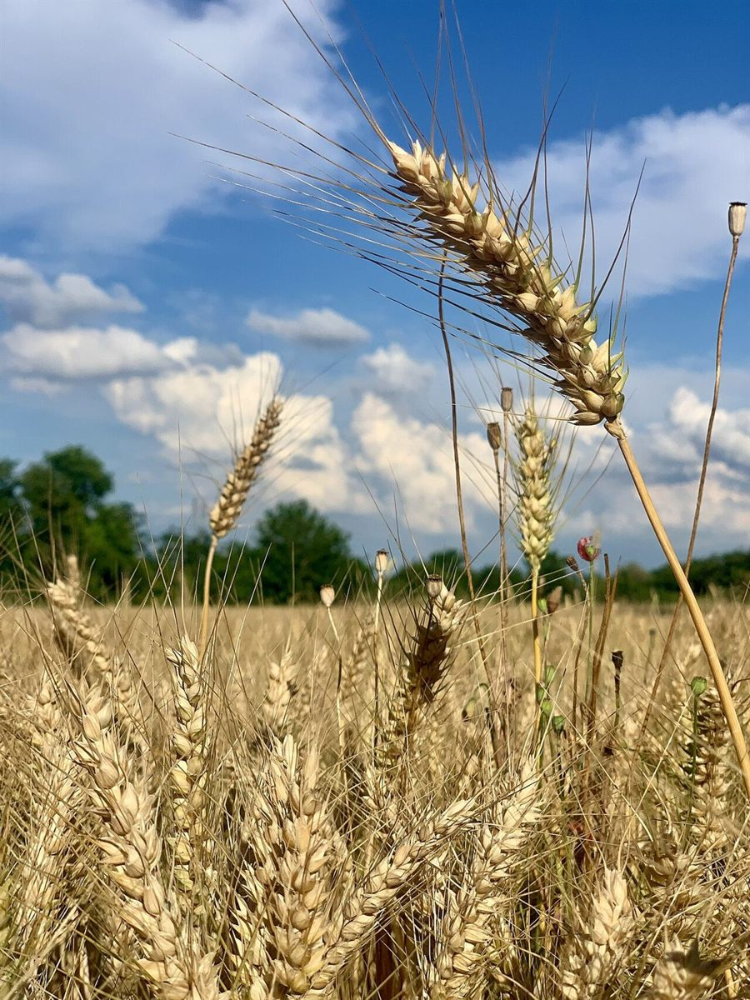

2/5 店のこと
店のこと
お店について確認できているのは、所在地とInstagramのアカウントだけです。
確認できていること
- 店名は「ベルファミーユ」、業種はパン屋
- 所在地は山口県下関市菊川町田部(番地は未確認)
- 電話番号はなし。連絡はInstagramから
- 営業時間・定休日・メニュー・価格・ご予約・駐車場は準備中

想像してみる
「美しい家族」という響きから
このページの内容は制作側の想像で、お店の実際の様子・考え・商品とは関係がありません。
「ベルファミーユ」はフランス語で「美しい家族」を連想させる語ですが、由来は分かりません。制作側は、家族や身近な人と食卓を囲む時間に、パンがそっと寄り添う店かもしれない、と想像しました(実際のお店の姿ではありません)。



町のこと
下関市菊川町について
菊川町は山口県下関市の北東部にある地域とされます。ただし、お店と町の関係や、お店の由来が町にあるかどうかは分かりません。